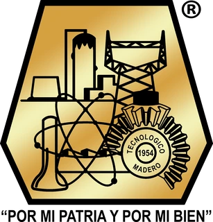

Desarrollo de software
Aplicaciones web, móviles o de escritorio, videojuegos y sistemas para escuelas, negocios u organizaciones.

Instituto Tecnológico de Ciudad Madero Departamento de Sistemas y Computación Ingeniería en Sistemas Computacionales
Feria de Innovación y Proyectos Tecnológicos
«De la idea al código,
del código a la innovación»
Faltan para la expo
// Convocatoria
El Capítulo Estudiantil ACM y el Departamento de Sistemas y Computación invitan a todo el alumnado de Ingeniería en Sistemas Computacionales a presentar sus proyectos en la Expo Sistemas 2026: una mañana para mostrar tu trabajo, recibir retroalimentación de un jurado y competir por premios.
Si este semestre hiciste un proyecto para una materia, ya tienes casi todo lo que necesitas. Si tienes un proyecto propio, también es bienvenido.
// 01 · Categorías
Elige la categoría que mejor describa lo principal de tu proyecto. Pueden participar estudiantes de cualquier semestre en cualquiera de ellas.
Aplicaciones web, móviles o de escritorio, videojuegos y sistemas para escuelas, negocios u organizaciones.
Agentes y asistentes, modelos de clasificación o predicción, visión por computadora y procesamiento de lenguaje.
Robots, sensores, sistemas embebidos, automatización y dispositivos conectados que interactúan con el mundo físico.
Infraestructura y monitoreo de redes, herramientas de protección, criptografía y análisis de seguridad con fines defensivos.
Análisis y visualización de datos, tableros, modelos estadísticos y bases de datos que ayudan a tomar decisiones.
Propuestas que combinan varias áreas o no caben en las demás: ideas nuevas con base tecnológica y un prototipo que las respalde.
// 02 · Bases
Léelas completas antes de registrarte. Son pocas y son claras.
// 03 · Programa
Lunes 7 de diciembre de 2026 · Unidad Académica de Sistemas, Campus II
Montaje de stands y prueba de equipos.
Bienvenida y presentación del jurado.
Visita del público, evaluación del jurado y entrevistas en video.
Los proyectos pasan al proyector ante el jurado.
Entrega de premios y foto general.
Cada proyecto tendrá una mesa con conexión eléctrica. Ahí muestras tu proyecto funcionando a visitantes, docentes y jurado. Lleva tu computadora y todo lo que tu demostración necesite.
Todos los proyectos serán evaluados. Tendrás 3 minutos para explicar y demostrar tu proyecto y 2 minutos para responder preguntas.
Según el número de proyectos registrados, pasarán al proyector todos los proyectos o solo los finalistas de cada categoría. El formato definitivo se avisará junto con la lista de stands y turnos.
Un equipo del capítulo pasará por los stands para grabar una entrevista breve sobre cada proyecto. Los videos se publicarán en las redes de la carrera.
Graba un video corto de tu proyecto funcionando y tenlo a la mano. Si el internet o el equipo fallan durante tu turno, podrás mostrar el video.
// 04 · Evaluación
Cada criterio se califica de 1 a 5. La calificación final es sobre 100 puntos.
El proyecto atiende una necesidad real y queda claro a quién beneficia.
El prototipo funciona en vivo y hace lo que el equipo dice que hace.
El trabajo técnico es sólido y está bien resuelto.
La explicación es clara, ordenada y respeta el tiempo.
// 05 · Premios
Los premios se darán a conocer antes del evento.
Un primer lugar en cada una de las seis categorías.
El proyecto que mejor atiende una necesidad de la comunidad.
Para el proyecto que mejor aprovecha la inteligencia artificial.
Lo eligen las personas asistentes con su voto durante la expo.
Para todas las personas que presenten su proyecto.
// 06 · Fechas
Último momento para enviar el formulario.
Publicación de proyectos aceptados, stands, turnos y formato.
Opcional: prueba tu demostración en el lugar del evento.
Llega con tiempo para instalar y probar.
Unidad Académica de Sistemas, Campus II.
// Registro
El registro cierra el viernes 27 de noviembre de 2026 a las 23:59 h. Ten a la mano el nombre del proyecto, su categoría, una descripción breve del problema que resuelve y los datos de tu equipo.
Abrir formulario de registroEl formulario se abre en Google Forms.
// 07 · Preguntas frecuentes
Sí. Puede ser un proyecto de una materia de este semestre o un proyecto propio desarrollado durante 2026. La expo es independiente de la calificación de la materia.
Sí, con toda libertad. Lo que buscamos es resolver problemas. Solo declara en el registro qué herramientas usaste y para qué.
Sí. Puede participar cualquier estudiante de la carrera, de cualquier semestre y en cualquier categoría.
Hasta 3. También puedes participar de forma individual. Cada estudiante participa con un solo proyecto.
Sí, siempre que para el 7 de diciembre tengas un prototipo que funcione y puedas mostrarlo en vivo. En el formulario indicas en qué estado está hoy.
Elige la que describa lo principal de lo que hace. Si combina varias áreas o no cabe en ninguna, regístralo en Innovación tecnológica.
Tu computadora y todo lo que tu demostración necesite. Tendrás una mesa con conexión eléctrica. Si necesitas internet, más contactos o espacio adicional, indícalo en el registro.
No. Participar y asistir no tiene costo.